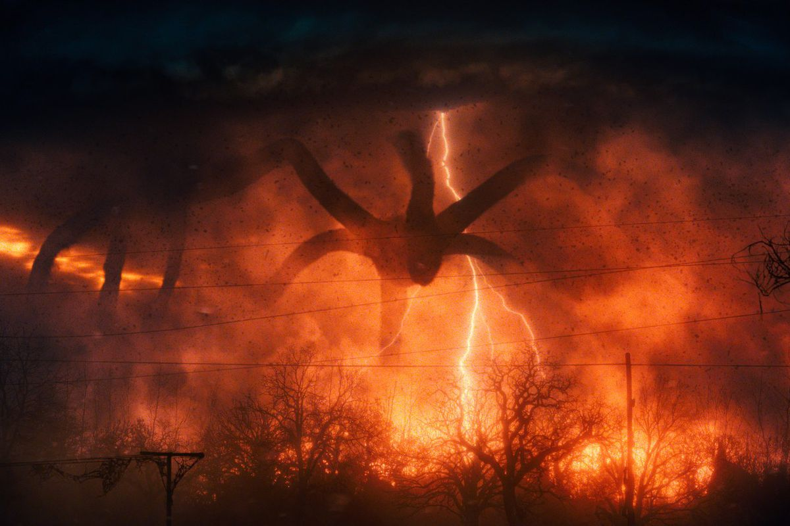
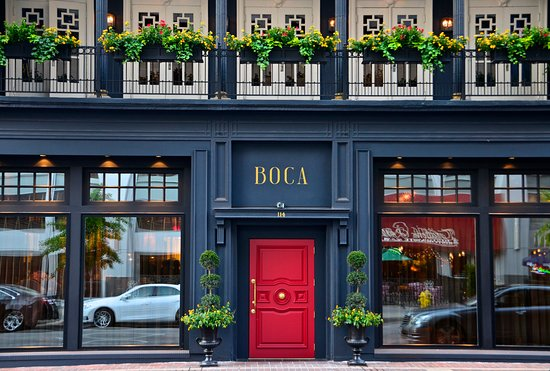

North?
Where To Stay

- Renaissance Cincinnati Downtown Hotel: Located in a historic district in downtown Cincinnati, this boutique hotel is just minutes from popular attractions.
- The Westin Cincinnati: Overlooking historic Fountain Square, this hotel boasts an outstanding location in the heart of Cincinnati's bustling central business district and downtown area.
- Hilton Cincinnati Netherland Plaza: A downtown Cincinnati icon since 1931, the Netherland Plaza's authentic French Art Deco character is today recognized as a National Historic Landmark.
- The Cincinnatian Hotel: Our building has been in the heart of downtown Cincinnati since 1882, listed in the Historic Hotels of America, and featuring a mix of Second Empire architecture, vintage artwork, and modern design.
What To Eat

- Boca: with it's one of a kind dining experience marrying world-class, chef-driven cuisine with gracious service, Boca is Chef David Falk's ode to Europe
- Mita's: The eclectic, farm-inspired menu focuses on both the traditional and modern foods and beverages of Spain and Latin America with tapas, ceviches, cured hams, cheeses, and large plates.
- Arnold's Bar and Grill: Always eager to show off it's 150 plus years of history, Arnold's is Chcinnati's oldest tavern and boasts above-par American comfort food and well-priced drinks.
- Skyline Chili: Famous for their incredibly delicious Cheese Coneys and 3-Ways, this iconic restuarant chain still uses an original secret family recipe passed down through the generations of the Lambrinides family.